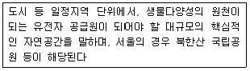
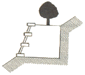
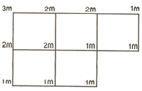

자연생태복원기사(구) (2006-05-14 기출문제)
1과목: 환경생태학개론
1. 식물에는 2가지 생존전략(K와 r)이 있다. r-전략종의 경우 옳은 설명은?
- 생산의 대부분을 체중을 늘리는데 사용한다.
- 생산의 대부분을 종자(또는 새끼)를 만드는데 사용한다.
- 생산의 대부분을 호흡하는데 사용한다.
- 생산의 대부분을 새끼를 돌보는데 사용한다.
(정답률: 알수없음)

2. C. Darwin이 주장한 개체군의 크기를 조절할 수 있는 방법이 아닌 것은?
- 타 생물의 피식
- 기생충과 질병
- 물리적 제한요인
- 타 생물과의 공생
(정답률: 알수없음)
3. 지구 온난화에 의해 나타는 현상이 아닌 것은?
- 탄소순환의 변화
- 해수면의 상승
- 고온성 농작물의 생산성 증가
- 북반구 생물의 북한계선 남하
(정답률: 알수없음)
4. 유네스코에서 1971년 생물권보호지구의 국제망을 형성한 계획으로 생물권보호지구는 지방주민의 이익을 보장하기 위해 지속적인 발전ㆍ보전 노력이 양립할 수 있는 가능성을 모색한 모형설정으로 기획되었던 계획은?
- World Heritage Site program
- Conservation Block program
- Conservation Corridor program
- Man and Biosphere program
(정답률: 알수없음)
5. 우점도지수가 매우 높고 다양도지수가 매우 낮을 때의 환경상태는?
- 양호하다
- 불량하다
- 보통이다
- 무관하다
(정답률: 93%)
6. 다음 중 빈부수성 수역의 지표군으로 인정되는 생물은?
- 플라나리아류
- 실지렁이류
- 복족류
- 잠자리류
(정답률: 알수없음)
7. 생물상이 다양하며 담수생물과 육상생물의 서식처로서 양면성을 가지는 생태계는?
- 연안
- 습지
- 육수
- 정수
(정답률: 알수없음)
8. 소택지(沼澤地)는 목본식물이 있는 습지이다. 그 소택지의 유형과 식물이 올바르게 연결된 것은?
- 북부 침엽수 소택지 → 잎갈나무, 가문비나무
- 남부 활엽수 소택지 → 가시나무, 후박나무
- 남부 침엽수 소택지 → 서양측백, 낙우송
- 북부 활엽수 소택지 → 버드나무, 산딸나무
(정답률: 알수없음)
9. 일반적으로 우점도를 비교하는데 사용되는 지수는?
- 브라운 지수
- 새넌 지수
- 심프슨 지수
- 마이애미 지수
(정답률: 알수없음)
10. 시간경과에 따라 생성된 군집의 자연적인 변화를 가리키는 것은?
- 항상성
- 생명부양시스템
- 다양성
- 생태적 천이
(정답률: 알수없음)
11. 개체군의 특성에 관한 설명 중 옳지 않은 것은?
- 일시적으로 무제한으로 기하급수적으로 성장하는 것을 지수함수형(J형)이라 한다.
- 밀도의 증가에 따라 제한요인의 작용으로 성장률이 감소하는 경우 시그모이드형(S형)이라 한다.
- 일시적이며 불안정하고 변동하기 쉬운 서식지에서는 r-선택이 이루어지며 개체군 내부 밀도의 영향을 받는다.
- k-선택은 환경수용능력에 가깝게 성장하는 안정한 서식지의 개체군에서 이루어지며, 극상림과 같은 안정된 상태에서 나타난다.
(정답률: 75%)
12. 고위도 습원(濕原, bog) 생태계의 환경을 설명한 내용으로 옳지 않은 것은?
- 습원의 물이끼는 양이온을 흡수하고, 수소이온을 방출하므로 pH를 산성화한다.
- 습원은 수분함량이 높고 물의 비열이 크며, 퇴적된 이탄층의 단열작용으로 온도변화가 느리다.
- 습원토양내의 환경은 온화한 온도, 산성, 풍부한 산소 등의 조건에서활발한 미생물 활동으로 유기물 분해가 빠르다.
- 우리나라 대암산의 고층습원에도 이탄층이 형성되어 있으며, 가는오이풀, 물이끼, 삿갓사초 등이 자생한다.
(정답률: 알수없음)
13. 생물종을 절멸 또는 위태롭게 하는 가장 중ㅇ한 인위적인 영향에 해당하지 않은 것은?
- 종의 과다한 이용
- 도입된 포식지 및 경쟁자 또는 질병
- 유전자 다양성 유지
- 서식지 파괴와 전환
(정답률: 알수없음)
14. 다음 부영양화에 대한 설명으로 틀린 것은?
- 부영양화가 형성된 호소에서는 녹갈색 물꽃(water bloom)현상이 발생하는 경우가 있다.
- 물꽃현상이 나타난 물은 정수작업에 의해서도 완전히 처리하기 어려우며, 수돗물 중에 플랑크톤이 일부 섞여 색을 띠기도 한다.
- 질소는 주로 축산 등의 비점오염원에 의해 발생되며 강우강도가 낮으면 유출정도가 적고, 유량 증가시 농도가 증가한다.
- 하천이나 호소에 유기물이나 질소, 인 등 영양염류가 적당히 존재하면 자연정화되지만 과잉 공급되면 식물성 플랑크톤이나 조류의 이상번식을 촉진하여 수질이 악화된다.
(정답률: 알수없음)
15. 정수생태계에 대한 설명으로 옳은 것은?
- 수심 및 유량에 따라 빈영양호와 부영양호로 구분할 수 있다.
- 호소와 연못의 가장자리와 같이 물의 흐름이 없이 정체되고 햇빛이 드는 수생태계이다.
- 가장자리의 얕은 지역으로 햇빛이 바닥까지 유입되어 정수식물 등이 자라 수 있는 구간을 조광대(Limnetic zone)라고 한다.
- 햇빛이 전혀 유입되지 않아 광합성이 불가능하며 침전되는 유기물이 잔재를 먹이로 하거나 다른 소비자를 먹이로 취하는 구간을 연안대라고 한다.
(정답률: 알수없음)
16. 2차 대기오염물질이며 주로 침엽수로 이루어진 산림생태계에 가장 큰 영양을 끼치는 물질은?
- 아황산가스
- 질소산화물
- 일산화탄소
- 오존
(정답률: 알수없음)
17. 토양의 수직단면에 대한 설명으로 옳지 않은 것은?
- 맨 위층은 나뭇잎과 같은 부분적으로 썩은 유기물로 구성되어 무기영양분을 많이 함유하고 있다.
- 표토(topsoil)에는 썩은 유기물인 부식질이 있어 어두운 색깔을 나타낸다.
- 하층토( subsoil)는 표토보다 색이 옅고 무기영양분이 많이 함유되어 있다.
- 모암층은 물리화학적 파쇄에 의해 모암이 토양으로 전환되는 첫 단계이다.
(정답률: 50%)
18. 다음 중 귀화식물(naturalized plant)에 관련한 내용으로 틀린 것은?
- 귀화식물 분포지는 활발한 해외 교류를 비롯하여 도시화, 산업화, 해외에서의 다양한 작물 품종도입 등에 의해 점차 확대되는 추세이다.
- 어느 지역에 귀화식물이 어느 정도 존재하는 가를 나타내는 지표를 귀화율이라 한다.
- 귀화식물의 귀화율은 귀화식물의 종수에 대한 자생식물의 종수의 비율(%)로 나타낸다.
- 개발이 진행된 나지에서는 일반적으로 귀화율이 높게 나타난다. 그러므로 귀화율은 토지교란의 지표로 활용할 수 있다.
(정답률: 50%)
19. 생태계의 물질순환에 대한 다음 설명 중 옳은 것은?
- 인순환 : 바다에서 육지로 대기권을 통하여 순환하며, 침적토에 큰 저장소가, 대기에 작은 저장소가 있다. 아미노산의 형태로 섭취된다.
- 질소순환 : 원형질과 물질을 구분하는 에너지 전환에 필요불가결한 원소로서 토양속에서 불용상태로 존재하여 식물생장의 제한요인으로 작용한다.
- 황순환 : 대기중의 약 80%를 차지하지만 이는 생물이 바로 이용할 수 없으므로, 박테리아를 통하거나, 일정한 과정을 거쳐 흡수 가능한 염의 형태로 변환하여 생물체 내에 흡수한다.
- 탄소순환 : 식물의 잎에서 광합성 작용에 의해 당, w방, 단백질 등의 형태로 이산화탄소를 동화하고 흡수하여 영양물질이 되어 식물체내에 축적되거나 먹이사슬을 통해 동물로 이동되기도 한다.
(정답률: 알수없음)
20. 다음 중 우리나라에서 적용하는 환경오존기준은? (단, 1시간 평균치)
- 0.5 ppm 이하
- 0.3 ppm 이하
- 0.1 ppm 이하
- 0.⑤ ppm 이하
(정답률: 알수없음)
2과목: 환경계획학
21. 환경용량의 개념을 생태학적 관점에서는 세 가지 측면에서 살펴볼 수 있다. 다음 중 세가지 측면에 해당하지 않는 것은?
- 환경의 자정능력
- 지역의 수용용량
- 자원의 지속가능성
- 생태적 안정성
(정답률: 알수없음)
22. 환경부장관이 자연환경보전법에 의해 생물다양성이 증진이 필요한 지역 또는 생물다양성이 독특하거나 우수한 지역을 보전하기 위하여 토지 소유자 또는 관리인과 경작방식의 변경, 화학물질의 사용감소, 습지의 조성 등의 관리방법 등을 내용으로 하는 계약을 체결할 경우 이 계약의 명칭은?
- 생물다양성 관리계약
- 생물서식지 보전계약
- 생태계보전지역 관리계약
- 생물서식지 보전 지원계약
(정답률: 알수없음)
23. 열역학 제2법칙에 대한 설명으로 틀린 것은?
- 고립계에서는 에너지 변환시 엔트로피 총량은 감소한다.
- 엔트로피의 증가라 함은 사용 가능한 에너지가 사용 불가능한 에너지의 상태로 전환됨을 의미한다.
- 엔트로피 증가의 법칙이라 불리운다.
- 에너지 무질서가 증가하는 방향 즉, 엔트로피가 증가하는 방향으로 이동한다.
(정답률: 알수없음)
24. 다음 바젤협약(Basel convention)과 관련한 내용 중 옳지 않는 것은?
- 유해 폐기물의 국가간 이동금지에 대한 협약이다.
- 우리나라도 1993년 가입하였다.
- 국가간 이동뿐만 아니라 자국내의 폐기물 발생을 최소화한다.
- 리우환경회담에서 결정되었다.
(정답률: 알수없음)
25. 생태공원조성 계획에 있어 산림지역 조성 방법으로 적합하지 않는 것은?
- 수림지의 잡초와 나뭇가지 등은 모두 제거한다.
- 숲 가장자리에 망토군락과 소매군락을 형성한다.
- 상수리 나무, 줄참나무 등 낙엽활엽수림은 임상유지하고 보전 육성한다.
- 새로운 수림지 육성, 개선 시 현존 식생과 잠재 자연 식생의 구성종과 구조에 맞게 숲을 형성한다.
(정답률: 알수없음)
26. 퍼머컬쳐의 기본원리가 되는 자연생태계의 특성이 아닌 것은?
- 다양성
- 안정성
- 순환성
- 종속성
(정답률: 70%)
27. 국토의 계획 및 이용에 관한 법률에 의한 토지적성평가의 평가지표는 세 가지 적성별로 평가지표를 구체화시켜 평가하고 있다. 다음 중 토지적성평가의 평가지표를 위한 적성이 아닌 것은?
- 농업적성
- 개발적성
- 보전적성
- 관리적성
(정답률: 알수없음)
28. 국토의 계획 및 이용에 관한 법률에서 쾌적한 환경조성 및 토지의 고도이용과 그 증진을 위하여 건축물의 높이의 최저한도 또는 최고한도를 규제할 필요가 있는 용도지구는?
- 미관지구
- 고도지구
- 방재지구
- 시설보호지구
(정답률: 알수없음)
29. 환경용량을 평가할 때 사용되는 지표 중의 하나로 재화와 용역의 생산에 필요한 에너지 측면의 갗를 과학적으로 측정한 것은?
- 생태적 발자국
- 에머지
- 에너지 지수
- 에너지환경지표
(정답률: 알수없음)
30. 환경ㆍ교통ㆍ재해 등에 관한 영향평가법으로 도시의 개발시 환경영향 평가를 실시하여야 하는 e상사업의 범위 규정으로 틀린 것은?
- 도시개발법의 규정에 의한 도시개발사업 중 면적이 20만m2 이상인 것
- 도시 및 주거환경정비법의 규정에 의한 정비사업 중 면적이 30만m2 이상인 것
- 국토의 계획 및 이용에 관한 법률의 규정에 의한 도시계획시설사업 중 유통업무설비로서 부지면적이 20만m2 이상인 것
- 주택법의 규정에 의한 대지조성사업 중 면적이 30만m2 이상인 것
(정답률: 알수없음)
31. 국가환경종합계획에 관한 설명 중 틀린 것은?
- 환경부장관은 관계중안행정기관의 장과 협의하여 국가차원의 환경보전을 위한 국가환경종합계획을 10년마다 수립하여야 한다.
- 환경부장관은 확정된 국가환경종합계획의 종합적 체계적 추진을 위하여 5년마다 환경보전중기종합계획을 수립하여야 한다.
- 관계중앙행정기관의 장 및 시ㆍ도지사는 환경보전중기종합계획에 따른 연도별 시행계획의 추진실적을 매 2년마다 환경부장관에게 제출하여야 한다.
- 시ㆍ도지사는 국가환경종합계획 및 중기계획에 따라 당해 시ㆍ도환경계획을 수립ㆍ시행하여야 한다.
(정답률: 알수없음)
32. 국토의 계획 및 이용에 관한 법률에서 용도지역안의 건폐율의 최대한도는 관할구역의 면적 및 인구규모, 용도지역의 특성 등을 감안하여 규정되나, 지방자치단체의 조례가 아닌 법상 계획관리지역의 건폐율은?
- 40% 이하
- 50% 이하
- 60% 이하
- 70% 이하
(정답률: 알수없음)
33. 다음 중 지속가능한 발전(ESSD)의 개념 중 맞지 않은 것은?
- 1987년 브룬트란트(Brundtland) 보고서에서 최초로 언급하였다.
- 경제와 환경을 동시에 고려하기는 어렵다.
- 생태적 회복성, 경제성장, 형평성의 내용을 담고 있다.
- 미래세대의 후생을 저해하지 않는 범위 내에서 현재의 필요를 충족시킨다.
(정답률: 알수없음)
34. 자연환경보전법상 제시된 생태ㆍ자연도의 작성방법으로 올바른 것은?
- 5만분의 1이상의 지도에 실선으로 표시
- 5천분의 1 이상의 지도에 점선으로 표시
- 2만5천분의 1 이상의 지도에 실선으로 표시
- 1천분의 1 이상의 지도에 점선으로 표시
(정답률: 알수없음)
35. 도심의 관광녹지로부터 농촌, 자연지역에 이르는 생태네트워크의 시행방안에 있어서 고려사항이 아닌 것은?
- 기존 녹지를 적극적으로 보전하고 최대한 계획에 활용
- 기존 자생수목을 최대한 보전 활용
- 단지 중심부에 핵 소생물권 역할을 하는 중앙녹지대를 조성
- 단지 내 생물이 이동 할 수 있는 거점녹지와 점 녹지를 분산조성
(정답률: 알수없음)
36. 산ㆍ하천ㆍ습지ㆍ호소ㆍ농지ㆍ도시ㆍ해양 등에 대하여 자연환경을 생태적 가치, 자연성, 경관적 가치 등에 따라 등급화하여 작성한 지도는?
- 자연환경현황도
- 녹지자연도
- 생태ㆍ자연도
- 국토환경지도
(정답률: 알수없음)
37. 국가환경종합계획의 내용에 포함되지 않는 것은?
- 도시환경의 지표 및 예측
- 환경오염원ㆍ환경오염도 및 오염물질 배출량의 예측과 환경오염 및 환경훼손으로 인한 환경질의 변화 전망
- 사업의 시행에 소요되는 비용의 산정 및 재원 조달방법
- 인구ㆍ산업ㆍ경제ㆍ토지 및 해양의 이용 등 환경변화 여건에 관한 사항
(정답률: 알수없음)
38. 우리나라 각종 개발 계획 수립시 환경문제 해결을 위한 환경영향평가 범주가 아닌 것은?
- 생활환경
- 자연환경
- 사회경제환경
- 공해환경
(정답률: 50%)
39. 환경부장관은 관계중안행정기관의 장 및 시ㆍ도지사와 협조하여 해당 생태계의 보호ㆍ복원대책(우선 보호대상 생태계의 복원)을 마련하여 추진 할 수 있는 바, 다음 중 그 대상이 아닌 것은?
- 멸종위기 야생동ㆍ식물의 주된 서식지 또는 도래지로서 파괴ㆍ훼손 또는 단편화 등으로 ds하여 종의 존속이 위협을 받고 있는 경우
- 자연성이 특히 높거나 취약한 생태계로서 그 일부 또는 전부가 향후 5년 이내 훼손될 가능성이 있는 경우
- 생물다양성이 특히 높거나 특이한 자연으로서 훼손되어 있는 경우
- 자연성이 특히 높거나 취약한 생태계로서 그 일부가 파괴ㆍ훼손되거나 교란되어 있는 경우
(정답률: 알수없음)
40. 아래의 설명은 생태ㆍ녹지 네트워크의 구성요소 중 어떤 것에 대한 것인가?

- 핵심(core)
- 거점(spot)
- 점(point)
- 생태통로(Eco-corridor
(정답률: 알수없음)
3과목: 생태복원공학
41. 다음 중 서식처 적합성(habitat suitability) 분석을 가장 적절하게 설명한 것은?
- 희귀종이나 복원의 목표 종을 취우선적으로 고려할 경우 무관한 다른 환경요인들을 배제시키는 기법
- 생태조사 결과를 토대로 보전할 것인지, 복원할 것인지를 결정하는 기법
- 제안된 개방사업이 생태계 혹은 생태계의 구성요소에 미치는 잠재적 영향을 파악하고, 계량화하여 평가하는 기법
- 생물종별로 요구되는 서식처 조건을 지수화하고, 그 지수를 토대로 가장 적합한 생물종 서식처를 도출하는 기법
(정답률: 알수없음)
42. 식생조사 방법 중 하나인 Braun-Blanquet 방법에 대한 설명으로 옳지 않은 것은?
- 주목적인 조사구의 범위에 나타는 식물의 양적평가를 수반하여 완전한 목록을 작성하는데 있다.
- 기본적인 조사도구는 조사용지, 화판, 필기구, 줄자, 접자, 지형도, 카메라, 경사계, 식물채집용구 등이다.
- 특징 중 하나는 상관적, 구조적으로 균질하지 않는 식생의 집합체에 조사구를 설정한다.
- 주사구 내에 출현한 식물을 계층별로 기록하여 식생 조사표에 기입한다.
(정답률: 알수없음)
43. 다음 용어의 정의가 바르게 표기된 것은?
- 도입식물 : 외국으로부터 도래된 식물의 총칭으로 귀화식물도 포함
- 외래식물 : 자연 혹은 인위적으로 이루어진 민둥땅이나 빈약한 식생을 개선할 목적으로 파종, 식재 등 여러 가지 방법으로 들여온 식물
- 보전종 : 녹화공사에 쓰이는 모든 식물을 총칭
- 향토식물 : 일반적으로 오랜기간 자연도태에 의해서 그 지방의 입지환경에 잘 적응해, 자연상태로 널리 분포하는 식물
(정답률: 알수없음)
44. 조류의 먹이원인 곤충 종들의 재공급이 가능한 인접 녹지 패치(patch)간 한계거리로 가장 적당한 것은?
- 1km
- 2km
- 3km
- 4km
(정답률: 알수없음)
45. 유역면적 2.5ha, 유출계수 0.4, 강우강도 7,500/(52+T)mm/hr, 유입시간 5분, 관거 내의 유속 1m/sec, 관거길이 180mm인 관거 출구에서의 첨두 유출량은?
- 0.33 m3/sec
- 0.35 m3/sec
- 0.37 m3/sec
- 0.39 m3/sec
(정답률: 알수없음)
46. 벽면의 상부, 건물 옥상에 식재용기를 설치하고, 신장력이 왕성한 덩굴성 식물을 벽면 밑으로 늘어지며 생장하도록 하는 방법은?
- 등반부착형 녹화
- 하수형 녹화
- 등반감기형 녹화
- 상ㆍ하행 병용녹화
(정답률: 알수없음)
47. 미티게이션 뱅킹(Mitigation Banking)의 특징을 설명한 것으로 틀린 것은?
- 개발사업이 이루어지기 d전에 훼손될 습지에 대한 영향을 고려하여 미리 습지를 만들고, 향후에 개발사업이 진행될때 미리 만들어진 습지만큼을 훼손할 수 있도록 하는 정책을 말한다.
- 작은 파편화된 습지를 하나의 통합된 습지로 관리할 수 있다.
- 규제 부서의 건설사업 허가를 위한 검토가 용이하고, 허가기간이 짧으며, 통합적 관리가 용이하다.
- 다른 유형의 보상습지의 조성은 훼손될 습지와 동일한 면적이어야 한다.
(정답률: 알수없음)
48. 다음은 몇 급의 산비탈 선떼붙이기 공작물인가?

- 1급
- 2급
- 3급
- 4급
(정답률: 알수없음)
49. 환경포텐샬에 대한 설명으로 적합하지 않은 것은?
- 복원잠재력을 의미한다.
- 특정장소에서 종의 서식이나 생태계 성립의 잠재적 가능성을 나타내는 개념이다.
- 환경의 생태수용략을 의미한다.
- 시간이 지나면서 천이가 진행될 가능성을 의미하기도 한다.
(정답률: 알수없음)
50. 신토에서 농도잔해를 일으킬 위험성이 높은 일반적인 전기전도도 기준값은?
- 0.5 ms/cm 이상
- 1.0 ms/cm 이상
- 1.5 ms/cm 이상
- 2.0 ms/cm 이상
(정답률: 알수없음)
51. 다음 중 토양수분 포텐샬(soil water potential)과 관련된 설명으로 옳지 않은 것은?
- 표준압력과 온도하에서 순수한 자유수와 토양수분간의 에너지 수준차이를 말한다.
- 주어진 양의 물이 갖는 에너지를 물의 무게로 나누어 얻어지는 포텐샬을 압력수두(壓力水頭)라고 한다.
- 토양의 수분장력을 그에 대응하는 수두의 높이로 나타낸 후 그의 대수를 취하여 pF로 표시한다.
- 토양수분장력이 1기압(1atm)이면 수두의 높이로는 대략 1,000cm로서 pF4이며, 위조점의 수분장력은 pF5.0에 해당한다.
(정답률: 알수없음)
52. 다음 중 생물종이 지리적으로 분산하는 세 가지 방식에 포함되지 않은 것은?
- 확산
- 도약분산
- 단절
- 영속이주
(정답률: 알수없음)
53. 자연형 하천 복구공사에 활용하는 야자섬유 재료의 규격 및 설치기준으로서 가장 적합한 설명은?
- 야자섬유망의 규격은 폭 2m, 길이 20cm를 표준으로 한다.
- 야자섬유망은 나무말뚝 착지핀을 사면에 10m2당 1개이상 박아 견고히 설치한다.
- 야자섬유로프는 불순물을 완전히 제거한 후 두께 15-20mm로 꼬아 만든다.
- 야자섬유 두루마리의 규격은 길이 2m, 지름 0.6m, 크기의 실린더형을 표준으로 한다.
(정답률: 알수없음)
54. 생태통로 조성방법 중 잘못된 것은?
- 동물유도를 위해 입구에 식생을 한다.
- 소형동물의 이동통로는 원형관 또는 생태관(Eco-pipe) 등 단순구조로 계획한다.
- 교량형 생태통로는 높이 1m정도의 생울타리 등의 수림대를 설치한다.
- 양서류 또는 파충류의 이동을 위해 25-50cm 정도폭의 이동통로를 배수구조물과 함께 조성해 준다.
(정답률: 알수없음)
55. 애반딧불이 서식조건 및 공간모형에 대한 설명 중 옳지 않은 것은?
- 유충의 생활장소가 가까이에 부드러운 이끼, 풀, 흙으로 구성된 산란장소가 있어야 한다.
- 애반딧불이 유충 서식에 적합한 하처는 사행하천으로 하폭 5-10m, 수심 30-50cm, 유속 10-20cm/sec의 하천이어야 한다.
- 반딧불이 서식이 가능한 수질조건은 호소환경 수질기준 2-3급수 정도에서 서식이 가능하다.
- 비상과 휴식을 위해서는 하천을 중심으로 한쪽은 산림으로 위요되고, 다른 한쪽은 논이나 습지형태의 개방공간이 확보되어야 한다.
(정답률: 알수없음)
56. 다음 지역을 구형분할(矩形分割)법을 이용하여 체적(m3)을 구하면 얼마인가?(단, 정사각형의 한변의 길이는 10m이다)

- 400m3
- 500m3
- 600m3
- 800m3
(정답률: 알수없음)
57. 다음 중 매토종자의 설명으로 옳지 않은 것은?
- 토양 속에 휴면상태로 생존하는 종자를 말한다.
- 매토종자의 수명은 식물의 생활형에 따라 결정된다.
- 계절적 매토종자와 영속적 매토종자로 구분해 볼 수 있다.
- 매토종자는 지표에서 가까울수록 개체수가 적게 된다.
(정답률: 알수없음)
58. 도로개설로 단절된 곳에 야생동물 이동통로를 조성하는 경우, 주ㆍ야로 많은 차량이 통행하는 산지 도로에 적합한 이동 통로 유형 설명으로 옳은 것은?
- 육교형이 터널형보다 더욱 적합
- 터널형이 육교형보다 더욱 적합
- 육교형이나 터널형 모두 적합
- 육교형과 터널형 모두 부적합하고 박스형 적합
(정답률: 70%)
59. 다음의 비탈면 녹화에 이용되는 식물 중 콩과식물이 아닌 것은?
- 비수리
- 참싸리
- 자귀나무
- 붉나무
(정답률: 알수없음)
60. 옥상녹화시스템의 구성요소 중 배수층의 기능 및 시공시 주의사항과 가장 거리가 먼 것은?
- 배수는 식물의 생장과 구조물의 안전에 직결된다.
- 식물의 뿌리로부터 방수층과 건물을 보호하는 기능을 한다.
- 옥상녹화시스템의 침수로 인해 식물의 뿌리가 익사하는 것을 예방한다.
- 기존 옥상녹화 현장에서 발생하는 하자의 대부분이 배수불량으로 인한 것이다.
(정답률: 알수없음)
4과목: 경관생태학
61. 위성원격탐사자료(satellite remote sensing data)의 유리한 특징만을 모아 놓은 것은?
- 광역성, 동시성, 개방성
- 동시성, 주기성, 표현형
- 주기성, 개방성, 표현형
- 동시성, 광역성, 주기성
(정답률: 알수없음)
62. 생태축을 구성하는 요소에 대한 설명으로 옳은 것은?
- 핵심지역(Core area) : 생물종의 공급원이 되는 대규모 녹지로서 반드시 보전되어야 하는 지역
- 완충지대(Buffer zone) : 생태축을 보호하기 위한 일정폭의 지역이며 개발이 언제나 가능한 지역
- 생태통로(Ecological Corridor) : 핵심지역과 도시지역을 연결하는 지역으로 반드시 건설하여야 하는 지역
- 복원지역(Restoration area) : 환경조건이 완전히 훼손된 지역으로 원시 자연상태로 만들어야 하는 지역
(정답률: 알수없음)
63. 우리나라의 겨울철새가 아닌 것은?
- 쑥독새
- 고니
- 논병아리
- 기러기
(정답률: 알수없음)
64. 산림법상 산림에 해당하지 않는 것은?
- 집단으로 생육하고 있는 입목ㆍ죽과 그 토지
- 임도
- 집단으로 생육한 입목ㆍ죽과 그 토지
- 입목ㆍ죽이 생립하고 있는 건물장 내의 토지
(정답률: 알수없음)
65. 토지시스템(Landsystem)의 구성단위가 알맞게 짝지어진 것은?
- 균질단위, 결절단위
- 균질단위, 비균질단위
- 균질단위, 비결절단위
- 비균질단위, 비결절단위
(정답률: 80%)
66. 환경영향평가시 보호 및 계획을 위한 동물서식지 구분이 아닌 것은?
- 균일성이 높은 대면적의 생태계
- 특정한 종류의 대면적 생태계와 근접해 있는 서식공간
- 가늘고 긴 선사의 형태를 가진 서식지
- 다양한 대면적의 생태계 외부에 섬 형태로 분포하는 소면적의 서식지
(정답률: 40%)
67. 콘크리트나 아스팔트로 포장된 도로로인하여 주변생태계에 미치는 영향으로 볼 수 없는 것은?
- 도로 횡단 동물의 압사
- 교량으로 인한 어도 차단
- 소음에 의한 교란
- 도로 자체와 가장자리의 미기후 변화
(정답률: 알수없음)
68. 다음 중 인위적 사구 육성방법이 아닌 것은?
- 사구보강
- 대체습지육성
- 해변육성
- 수면 밑 해안육성
(정답률: 알수없음)
69. 숲의 경계와 가장자리에 대한 기능으로 볼 수 없는 것은?
- 서식처 기능
- 생산 기능
- 여과 기능
- 공급원 기능
(정답률: 알수없음)
70. 인공위성 영상자료를 이용하여 취즉할 수 없는 자료는?
- 토지이용현황
- 지표면 온도
- 풍속
- 농작물 작황
(정답률: 알수없음)
71. 경관저항(Landscape resistance)을 가장 바르게 설명한 것은?
- 자연 생태환경을 침해하는 인공구조물 건설의 가속화 경향
- 생물이나 에너지 또는 물질의 이동이나 흐름을 방해하는 경관의 구조적 특징의 영향
- 환경영향평가 재실시를 요구하는 시민환경단체의 사회고발 압력
- 대규모 토목 및 건축 공사를 위한 기초 개발행위를 제한하기 위한 법 조항
(정답률: 알수없음)
72. 해류의 종류 중 하나로 압력경도력(pressure gradient)과 전향력(coriolis force)의 두 힘이 평형을 이루면서 일어나는 해수의 운동은?
- 취송류
- 지형류
- 경사류
- 밀도류
(정답률: 알수없음)
73. 다음 중 용어 설명이 잘못된 것은?
- 경관요소 : 비교적 균일한 개별 단위 또는 경관 모자이크 척도에서 인식되는 공간 요소
- 가장자리 : 생태계의 경계에 가까운 부분으로서 주변의 영향이 내부 환경조건의 발달을 억제하는 곳
- 기 질 : 한 시스템의 구조 또는 기능이 변이 유형에 중대한 변화를 가져오는 특성
- 파편화 : 서식지, 생태계 또는 토지이용유형이 더 작은 크기로 나누어지는 것
(정답률: 알수없음)
74. 경관생태학적 관점에서 환경영향평가는 개발사업으로 인한 문제점을 최소화하기 위한 평가기법이다. 이때 고려될 수 있는 경관요소가 아닌 것은?
- 생물종의 이동과 분포
- 생물종의 나이
- 경관을 구성하는 경관요소의 구조와 유형
- 경관을 구성하는 경관요소의 배치
(정답률: 알수없음)
75. 다음 중 토지변형에서 주요 공간과정의 변화를 바르게 나열한 것은?
- 절개-관통-단편화-응축-마멸
- 관통-절개-단편화-응축-마멸
- 절개-단편화-응축-관통-마멸
- 단편화-절개-관통-응축-마멸
(정답률: 알수없음)
76. 암반해안은 주로 파도의 침식작용의 결과로 형성되어지는데, 이러한 침식작용의 진행형태에 해당되지 않는 것은?
- 파도가 해안에서 부서질때 가해지는 물과 공기의 압력작용
- 파도에 의해 이동되는 모래나 자갈에 의한 마모작용
- 석회암 해안에서 물에 의한 용해작용
- 지반의 침강으로 인한 암석의 전단작용
(정답률: 알수없음)
77. 우리나라 국가기본도의 평면좌표계는?
- UTM 좌표계
- TM 좌표계
- WGS 좌표계
- Mercator 좌표계
(정답률: 알수없음)
78. 식물의 천이에 대한 설명 중 틀린 것은?
- 어떤 것을 나지화할 경우 초기단계에서는 일년생초본군락이 성립되기 쉽다.
- 천이는 식물의 종조성과 그 군락구조의 변화만이 아니라 그곳에 사는 동물과 토양 등 그 장소의 생태계 전체가 변화하는 것이다.
- 산불이 발생한 지역에서 일어나는 천이는 1차 천이이라고 한다.
- 조수지와 호수와 같은 습한 지역에서 일어나는 천이를 습성천이이라고 한다.
(정답률: 알수없음)
79. 백두대간의 경관생태와 그 가치에 대한 설명으로 옳지 않는 것은?
- 생태적으로 매우 안정한 생태계와 경관을 이루고 있다.
- 다양한 생물상을 포함하는 특징적 경관을 발달시켜 왔다.
- 빙하기와 간빙기가 교차할 때 마다 동식물의 이동 통로 혹은 피난처로 이용되고 왔다.
- 많은 하천의 발원지인 가장 한국적인 자연경관이다.
(정답률: 알수없음)
80. 환경영향평가의 현황조사는 생물서식공간을 중심으로 이루어지는 것이 바람직한데, 경관생태학적 측면에서 그 이유로 가장 적당한 것은?
- 저감 대책수립은 생물서식공간의 보전 우선 순위나 그 배열상태를 고려해야 하기 때문이다.
- 모든 생물서식공간은 습지를 중심으로 발달하므로 습지보전을 위해서 필요하기 때문이다.
- 현황조사시 조사자들의 편의를 도모할 수 있기 때문이다.
- 모든 주요 생물종은 특정한 생물서식공간에 서식하기 때문이다.
(정답률: 알수없음)
5과목: 자연환경관계법규
81. 다음 중 자연환경보전법에 의한 자연휴식지의 지정 주체는?
- 환경부장관
- 지방환경관서의 장
- 지방자치단체의 장
- 관계행정기관의 장
(정답률: 알수없음)
82. 국토의 계획 및 이용에 관한 법률에서 규정하고 있는 자연공원법에 의한 공원밀집마을지구에 대한 용적률로서 옳은 것은?(단, 조례는 고려하지 않음)
- 100% 이하
- 150% 이하
- 200% 이하
- 250% 이하
(정답률: 알수없음)
83. 독도 등 도서지역의 생태계보전에 관한 특별법에 의한 특정도서보전기본계획의 수립시기는?
- 1년
- 3년
- 5년
- 10년
(정답률: 알수없음)
84. 자연환경보전법상 생태계보전협력금은 10억원 범위안에서 생태계의 훼손면적에 단위면적당 부과금액과 지역계수를 곱하여 산정ㆍ부과한다. 이때 단위 면적당 부과금액은 얼마인가?
- 제곱미터당 250원
- 제곱미터당 500원
- 제곱미터당 750원
- 제곱미터당 1,000원
(정답률: 알수없음)
85. 국토기본법상 국토계획에 관한 설명 중 옳지 않은 것은?
- 국토종합계획 : 국토전역을 대상으로 하여 국토의 장기적인 발전방향을 제시하는 종합계획
- 도종합계획 : 도의 관할구역을 대상으로 하여 당해 지역의 장기적인 발전방향을 제시하는 종합계획
- 부분별계획 : 국토전역을 대상으로 하여 특정부분에 대한 장기적인 발전방향을 제시하는 계획
- 지역계획 : 국토전역을 대상으로 하여 특정부문에 대한 장기적인 발전방향을 제시하는 계획
(정답률: 알수없음)
86. 농지법상 용도구역에 관한 설명으로 옳지 않은 것은?
- 농업진흥구역은 농업용으로 이용하고 있는 토지가 집단화되어 있는 지역이다.
- 농업보호구역은 농업진흥구역의 용수원확보 등 농업환경을 보호하기 위해 설정한 구역이다.
- 농업보호구역으로 지정하여 관리할 지역에 서울특별시의 생산녹지구역도 포함되어 있다.
- 농업부호구역에서 농업진흥지역으로의 변경은 대통령령이 정하는 바에 의하여 농림부장관의 승인없이 할 수 있다.
(정답률: 알수없음)
87. 국토의 계획 및 이용에 관한 법률에 의한 국토의 용도구분에 해당되지 않는 지역은?
- 도시지역
- 준도시지역
- 관리지역
- 자연환경보전지역
(정답률: 알수없음)
88. 환경정책기본법상 사전환경성검토 협의시 협의기간을 연장할 수 있는 최대기간은?
- 7일 이내
- 10일 이내
- 15일 이내
- 30일 이내
(정답률: 알수없음)
89. 자연공원법상 국립공원위원회의 위원장은 누구인가?
- 환경부장관
- 환경부차관
- 환경부 자연보전국장
- 국립공원관리공당이사장
(정답률: 알수없음)
90. 국토의 계획 및 이용에 관한 법률상 건폐률의 특례에 관한 설명 중 옳은 것은?(단, 조례는 고려하지 않음)
- 도시지역외 지역에 지정된 개발진흥지구 : 60% 이하
- 논공단지 : 40% 이하
- 수자원보호구역 : 40% 이하
- 공업지역안에 있는 국가산업단지 : 60% 이하
(정답률: 알수없음)
91. 도시계획위원회의 심의를 거쳐 1회에 한하여 3년 이내의 기간동안 개발행위 허가를 제한할 수 있는 지역에 속하지 않는 것은?
- 녹지지역으로 수목이 집단적으로 생육되고 있는 지역
- 계획관리지역으로 조류 등이 집단적으로 서식하고 있는 지역
- 도시기본계획을 수립하고 잇는 지역으로 용도지역변경이 예상되는 지역
- 개발행위로 인하여 주변의 환경, 경관, 미관 등이 오염되거나 손살될 우려가 있는 지역
(정답률: 알수없음)
92. 환경정책기본법에 포함되지 않는 지역은?
- 방사능 물질에 의한 환경오염의 방지
- 과학기술의 위해성 평가
- 전자파의 위해성 관리
- 환경성 질환에 대한 대책
(정답률: 알수없음)
93. 야생동식물보호법상 불법 포획으로 5년이하의 징역 또는 3천만원이하의 벌금에 해당되지 않는 동물은?
- 두루미
- 장수하늘소
- 어름치
- 사향노루
(정답률: 알수없음)
94. 산림청장이 지정, 육성할 수 있는 산지복구전문기관의 업무에 속하지 않는 것은?
- 산림자원 육성을 위한 조사연구
- 형질변경된 산지의 복구
- 형질변경된 산지의 복구설계ㆍ감리
- 형질변경된 산지의 자연생태계복원 및 자연친화적인 복구방법의 조사ㆍ연구 및 개발
(정답률: 알수없음)
95. 국토의 계획 이용에 관한 법률상의 용도지역은 도시지역, 관리지역, 농림지역 및 자연환경보전지역으로 구분한다. 이 중 자연환경보전지역의 법률상의 건폐율과 용적률 범위로 옳게 짝지어진 것은?
- 건폐율 : 20 퍼센트 이하, 용적률 : 40퍼센트 이하
- 건폐율 : 20 퍼센트 이하, 용적률 : 80 퍼센트 이하
- 건폐율 : 10 퍼센트 이하, 용적률 : 40 퍼센트 이하
- 건폐율 : 10 퍼센트 이하, 용적률 : 80 퍼센트 이하
(정답률: 알수없음)
96. 야생동ㆍ식물보호법에서 지정한 멸종위기 야생동ㆍ식물 II급에 해당되는 종명은?
- 삵
- 붉은박쥐
- 표범
- 산양
(정답률: 알수없음)
97. 국토기본법ㅇ 명시된 “환경친화적 국토관리”를 위하여 국가 및 지방자치단체가 해야 할 일로 가장 거리가 먼 것은?
- 국토에 관한 계획이나 사업을 수립, 집행함에 있어서 자연환경과 생활환경에 미치는 영향을 사전에 고려하여야 하며, 환경에 미치는 부정적인 영향이 최소화될 수 있도록 하여야 한다.
- 국토의 무질서한 개발을 방지하고 국민생활에 필요한 토지를 원활하게 공급하기 위하여 토지이용에 관한 종합적인 계획을 수립하고 이에 따라 국토공간을 체계적으로 관리하여야 한다.
- 산, 하천, 호소, 연안, 해양으로 이어지는 자연생태계를 통합적으로 관리, 보전하고 훼손된 자연생태계를 복원하기 위한 종합적인 시책을 추진함으로서 인간이 자연과 더불어 살 수 있는 쾌적한 국토환경을 조성하여야 한다.
- 국제교류가 활발히 이루어질 수 있는 국토여건을 조성함으로써 대륙과 해양을 잇는 국토의 지리적 특성이 최대한 발휘되도록 하여야 한다.
(정답률: 70%)
98. 자연공원에 포함되지 않는 것은?
- 도립공원
- 국립공원
- 군립공원
- 시립공원
(정답률: 90%)
99. 습지보전법상 습지보전기본계획에 포함되어야 할 사항이 아닌 것은?
- 습지보호지역 지정에 관한 계획
- 습지조사에 관한 사항
- 습지보전을 위한 국제협력에 관한 사항
- 습지의 분포 및 면적과 생물다양성의 현황에 관한 사항
(정답률: 알수없음)
100. 산림 지역내 채석허가를 규정하고 있는 법규는?
- 산림법
- 산림기본법
- 산지관리법
- 광업법
(정답률: 알수없음)